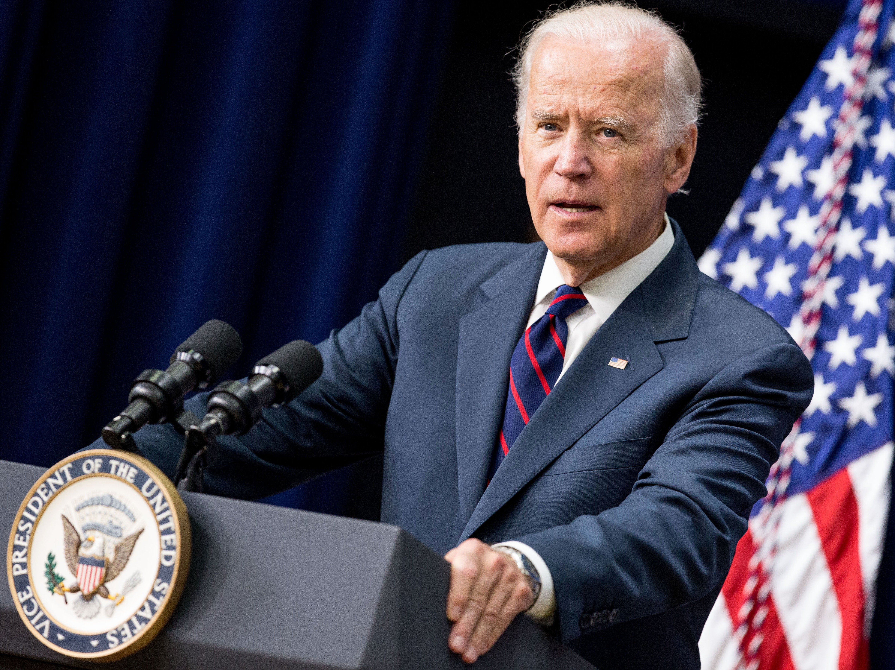

Frankfurt
Bahnbabo stürmt den Römer und installiert Militärdiktatur
Am frühen Morgen betritt er die Bahn, er atmet tief ein und sagt:
„Ich liebe den Geruch der Bahn am Morgen“.
Er zündet seine Zigarre an und fährt in Richtung Römer. Auf seiner Fahrt schließen sich ihm immer mehr Menschen an, Polizisten, Bahnfahren und andere städtische Arbeitskräfte. Als sie die Haltestelle Römer erreichen sind sie bereits Tausende. Sie verlassen die U-Bahn und marschieren. Die Regierung geht der Masse sofort aus dem Weg und der BahnBabo steigt auf den Balkon und ruft das Bahnimperium Frankfurt aus. Die Demokratie in Frankfurt ist Tod, lang lebe der BahnBabo!

Joe Biden fordert Anerkennung des Bahnimperiums und Nato Beitritt
Joe Biden äußerte seine Unterstützung für den BahnBabo und forderte in der Pressekonferenz eine sofortige Anerkennung durch den Kongress. Er äußerte ebenfalls Zustimmung für eine Aufnahme des Bahnimperiums in die Nato. Er kritisierte zwar den Putsch, sagte jedoch, dass der BahnBabo der perfekte verbündete gegen die Autolobby sei.